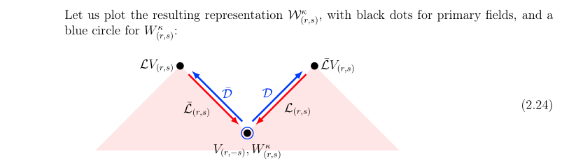

JuliVirBootstrap Documentation
Table of Contents
- 1. Conformal bootstrap equations in 2D
- 2. Code of the package
1. Conformal bootstrap equations in 2D
Notations, parametrisations
- Central charge
We parametrise the central charge of our theories in terms of variables \(B\), \(b\) or \(\beta\) related by
\[c = 13 + 6B + 6 B^{-1} \quad , \quad B = b^2 = -\beta^2, \quad B = \frac{c-13 \pm \sqrt{(c-1)(c-25)}}{12}\]
- Fields
We parametrise the conformal dimensions \((\Delta, \bar\Delta)\) of fields in terms of variables \(P, p, \delta\), related by
\[ \Delta = \frac{c-1}{24} + \delta \quad , \quad \delta = -P^2 = p^2 \]
The variable \(P\) is called the momentum. Moreover, we introduce the following parametrisation of dimensions in terms of Kac indices \(r, s\):
\[P_{(r,s)}=\frac{1}{2}(b r + b^{-1}s)\]
Or equivalently
\[p_{(r,s)} = -\frac{1}{2} (\beta r - \beta^{-1}s)\]
where \(r,s\) are arbitrary numbers. We say the field is degenerate if \(r,s\in \mathbb Z\) and \(rs > 0\). This convention is consistent with the one in Sylvain’s code.
In loop models, we denote \(V_{(r,s)}\) a non-diagonal field of left and right momenta \((P_{(r,s)},P_{(r,-s)})\).
Four point functions on the sphere
Because of conformal invariance, computation of any four-point correlation function reduces to the computation of
\[ \mathcal G(x) = \langle V_{1}(x) V_{2}(0) V_{3}(\infty) V_{4}(1) \rangle \]
Four-point correlation functions can be written in terms of Virasoro blocks as
\begin{align} \mathcal G(x) = \sum_{k \in \mathcal S} \frac{C_{12k} C_{k34}}{B_{k}} \mathcal G_{\Delta_k}^{(s)}(c |\Delta_{1}, \dots, \Delta_{4}|z)\end{align}We call \(\mathcal G_{\Delta_k}^{(s)}(c |\Delta_{1}, \dots, \Delta_{4}|z)\) a (non-chiral) conformal block. In the case of a non-logarithmic theory, conformal blocks factorise as
\begin{align} \mathcal G_{\Delta_k}^{(s)}(c |\Delta_{1}, \dots, \Delta_{4}|z) = \left| \mathcal F^{(s)}_{\Delta_{k}}(c | \Delta_{1}, \dots, \Delta_{4} | z) \right|^{2} \end{align}where we have introduced the notation \(\left|\mathcal F(\Delta, z)\right|^2 = \mathcal{F}(\Delta, z) \mathcal{F}(\bar\Delta, \bar z)\), and \(\mathcal F^{(s)}_{\Delta_k}\) is called a Virasoro block (also called chiral conformal block).
The coefficients \(C_{ijk}\) are the three-point structure constants.
Conformal blocks are characterized by the normalization conditions
\begin{align} \mathcal{G}^{(s)}_\Delta(x) & \underset{x\to 0}{=} \left| x^{\Delta-\Delta_1-\Delta_2}\right|^2 \left(1+O(x)\right) \\ \mathcal{G}^{(t)}_\Delta(x) & \underset{x\to 1}{=} \left|(1-x)^{\Delta-\Delta_1-\Delta_4}\right|^2 \left(1+O(1-x)\right) \\ \mathcal{G}^{(u)}_\Delta(x) & \underset{x\to \infty}{=} \left|\left(\frac{1}{x}\right)^{\Delta+\Delta_1-\Delta_3} \right|^2\left(1+O\left(\frac{1}{x}\right)\right) \end{align}Together with the invariance of \(\left\langle \prod_{i=1}^4 V_{\Delta_i}(z_i) \right\rangle\) under permutations, this leads to the relations
\begin{align} \mathcal{G}^{(t)}_{\Delta}(\Delta_1,\Delta_2,\Delta_3,\Delta_4|x) &= (-1)^{S_1+S_2+S_3+S_4} \mathcal{G}^{(s)}_{\Delta}(\Delta_1,\Delta_4,\Delta_3,\Delta_2|1-x) \\ \mathcal{G}^{(u)}_\Delta(\Delta_1,\Delta_2,\Delta_3,\Delta_4|x) &= (-1)^{S_1+S_2+S_3+S_4} \left|x^{-2\Delta_1}\right|^2 \mathcal{G}^{(s)}_\Delta(\Delta_1,\Delta_3,\Delta_2,\Delta_4|\tfrac{1}{x}) \end{align}where \(S=\Delta-\bar\Delta\) is the conformal spin, which we assume to be integer.
Zamolodchikov’s recursion for four-point blocks
Four-point blocks can be computed efficiently thanks to Zamolodchikov’s recursion.
We introduce a variable \(q\) related to \(z\) through
\[ z = \frac{\theta_2(q)^4}{\theta_3(q)^4}, \quad q = e^{-\pi\frac{K(1-x)}{ K(x)}} \]
where
\[ \theta_3(q) = \sum_{n\in\mathbb{Z}} q^{n^2} \quad , \quad \theta_2(q) = 2q^\frac14\sum_{n=0}^\infty q^{n(n+1)} \]
are Jacobi special \(\theta\)-functions, and \(K(x)\) is the elliptic \(K\) function.
In terms of these variables, our chiral \(s\)-channel conformal block is
\[ \mathcal{F}^{(s)}_{\delta}(c | \Delta_{1}, \dots, \Delta_{4} | x) = x^{E_0} (1-x)^{E_1} \theta_3(q)^{-4E_2} (16q)^{\delta} H_{\delta}(c | \Delta_{1},\dots, \Delta_{4} | q) \]
where we use the exponents
\[ E_0 = -\delta_1-\delta_2-\frac{c-1}{24} \quad , \quad E_1 = -\delta_1-\delta_4-\frac{c-1}{24} \quad , \quad E_2 = \delta_1+\delta_2+\delta_3+\delta_4+\frac{c-1}{24} \]
The non-trivial coefficient is the series
\[ H_{\delta}(q) = 1 + \sum_{N=1}^{N_{max}} \sum_{mn\leq N} C_{m,n}^N \frac{(16q)^N}{\delta-\delta_{(m,n)}} \]
Where the coefficient \(C_{m,n}^N\) is defined by the recursive formula
\[ C^N_{m,n} = R_{m,n}\left(\delta_{N-mn,0} + \sum_{m'n'\leq N-mn} \frac{C^{N-mn}_{m',n'}}{\delta_{(m,-n)}-\delta_{(m',n')}} \right) \]
And the coefficents \(R_{m,n}\) can be written
\[ R_{m,n} = \frac{1}{2}\frac{1}{D_{mn}} \prod_{r\overset{2}{=} 1-m}^{m-1} \prod_{s\overset{2}{=}1-n}^{n-1} \sqrt{(\delta_2-\delta_1)^2 -2\delta_{(r,s)}(\delta_1+\delta_2) + \delta_{(r,s)}^2} \sqrt{(\delta_3-\delta_4)^2 -2\delta_{(r,s)}(\delta_3+\delta_4) + \delta_{(r,s)}^2} \]
We do not actually take square roots, because each factor appears twice, except the \((r,s)=(0,0)\) factor which is however a perfect square. The normalization factor is
\begin{equation} \label{orgf643c13} D_{m,n} = mn \prod_{r=1}^{m-1} r^2B \left(r^2B - \frac{n^2}{B}\right) \prod_{s=1}^{n-1} \frac{s^2}{B}\left(\frac{s^2}{B} - m^2B\right) \prod_{r=1}^{m-1} \prod_{s=1}^{n-1} \left(r^2B -\frac{s^2}{B} \right)^2. \end{equation}One point functions on the torus
A one-point function on the torus can be written
\begin{align} \mathcal G(x) =Because of translation invariance, one-point functions on the torus do not depend on the field’s position. The trace can be written as
\begin{align} \mathcal G(x) &= \sum_{V_{\Delta} \in \mathcal S} < V_{\sigma} | V_{\Delta_{1}}(x) |V_{\sigma}> \\ &= \sum_{V_{\Delta} \in \mathcal S} C_{k k x} \mathcal G_{\Delta} (\tau, c, \Delta_{1} | x) \end{align}The conformal block \(\mathcal G_\Delta(\tau, c, \Delta_1|x)\) again factorises for non-logarithmic theories, and we write \(\mathcal F_\Delta(\tau, c, \Delta_1 | x)\) the corresponding Virasoro block.
Zamolodchikov’s recursion for torus one-point blocks
Like four-point blocks, torus one-point blocks can be computed recursively. We introduce \(H\) defined by
\begin{align} \mathcal F_{\Delta}(\tau, c, \Delta_{1} | x) = \frac{q^{\delta}}{\eta(q)} H^{\text{torus}}_{\Delta}(\tau, c, \Delta_{1} | q), \end{align}where \(q=e^{2i\pi \tau}\). The recursion formula for \(H^{\text{torus}}_{\Delta}(\tau, c, \Delta_{1} | q)\) is
\begin{align} H_{\Delta}^{\text{torus}} (\tau, c, \Delta_{1} | q) = 1 + \sum_{N=1}^{N_{\text{max}}}\sum C^{N, \text{torus}}_{m,n} \frac{q^N}{\delta - \delta_{(m,n)}} \end{align}The coefficients \(C_{m,n}^{N,\text{torus}}\) have the recursive representation
\begin{equation} \label{org2bad01e} C^{N,\text{torus}}_{m,n} = R^{\text{torus}}_{m,n}\left(\delta_{N-mn,0} + \sum_{m'n'\leq N-mn} \frac{C^{N-mn}_{m',n'}}{\delta_{(m,-n)}-\delta_{(m',n')}} \right) \end{equation}An expression for the \(R_{m,n}^{\text{torus}}\) can be found on this wikipedia article. It can be rewritten
\[ R_{m,n}^{\text{torus}} = \frac{1}{2 D_{m,n}} \prod_{r\overset2=1-2m}^{2m-1} \prod_{s\overset2=1-2n}^{2n-1} \sqrt{\delta_{(r,s)} - \delta_1} \]
where we do not actually take square roots, because each factor appears twice. The normalization factor is the same \(D_{m,n}\) as in the \eqref{orgf643c13} case Dmn
Logarithmic blocks
See this paper for more detail (here on my laptop).
In loop models the action of \(L_0\) is not diagonalisable, said otherwise some of the modules are logarithmic. The structure of a logarithmic module is the following:

here \(\mathcal L V_{(r,s)}\) and \(\bar{\mathcal L} V_{(r,s)}\) are non-diagonal primary fields.
Relation between sphere four-point blocks and torus one-point blocks
The recursion formulas for torus one-point blocks and sphere four-point blocks imply that four point blocks on the sphere are related to one-point blocks on the torus through the relation
\begin{align} H^{\text{torus}}_{P}(\tau, c | P_{1} | q^{2}) = H_{\sqrt{2}P}\left(c' \left|\left. P_{(0,\frac12)}, \frac{P_{1}}{\sqrt{2}}, P_{(0,\frac12)}, P_{(0,\frac12)} \right.\right| q \right) \end{align}where
- \(c'\) is related to \(c\) via \(\beta'=\frac\beta{\sqrt 2}\).
- Fields on the RHS have dimensions \(\Delta = \frac{c'-1}{24} - P^2\).
Our code successfully reproduces this relation:
import Pkg; Pkg.activate(".") using JuliVirBootstrap, BenchmarkTools, EllipticFunctions import JuliVirBootstrap.FourPointBlocksSphere.qfromx q = JuliVirBootstrap.FourPointBlocksSphere.qfromx(0.05) left=1; right=2; c_torus = CentralCharge("b", 1.2+.1*1im); c_sphere = CentralCharge("b", (1.2+.1*1im)/sqrt(2)) P = 0.23+.11im P1 = 0.41+1.03im V_torus_chan = Field(c_torus, "P", P, diagonal=true) δ_torus = V_torus_chan["δ"][left] δ11_torus = Field(c_torus, Kac=true, r=1, s=1, diagonal=true)["δ"][left] V_torus_ext = Field(c_torus, "P", P1, diagonal=true) corr_torus = OnePointCorrelation V_sphere_chan = Field(c_sphere, "P", sqrt(2)*P, diagonal=true) δ_sphere = V_sphere_chan["δ"][left] δ21_sphere = Field(c_sphere, Kac=true, r=2, s=1, diagonal=true)["δ"][left] δ12_sphere = Field(c_sphere, Kac=true, r=1, s=2, diagonal=true)["δ"][left] V_sphere_ext = Field(c_sphere, "P", P1/sqrt(2), diagonal=true) VKac_sphere = Field(c_sphere, Kac=true, r=0, s=1//2, diagonal=true) corr_torus = OnePointCorrelation(c_torus, V_torus_ext) block_torus = OnePointBlockTorus(V_torus_chan) corr_sphere = FourPointCorrelation(c_sphere, [VKac_sphere, V_sphere_ext, VKac_sphere,VKac_sphere]) block_sphere = FourPointBlockSphere("s", V_sphere_chan) h1 = JuliVirBootstrap.OnePointBlocksTorus.H(q^2, 5, block_torus, corr_torus, left) h2 = JuliVirBootstrap.FourPointBlocksSphere.H(q, 5, block_sphere, corr_sphere, left)
println("torus block = $h1") println("sphere block = $h2")
torus block = 1.0000059915273005 - 1.1912765043504052e-5im sphere block = 1.000005991527301 - 1.1912765042311957e-5im
Crossing symmetry for four-point functions on the sphere
Modular invariance for one-point functions on the torus
2. Code of the package
Main module
The module JuliVirBootstrap is the main module of this package, and it includes the sub-modules.
CFTDataprovides types for central charges and fields.CorrelationFunctionsprovides types for one-point and four-point correlation functions, as well as methods for computing coefficients appearing in their conformal blocks.VirasoroConformalBlocksprovides types for representing four-point conformal blocks on the sphere and one-point conformal blocks on the torus, as well as methods for computing them.
#=========================================================================================== Written by Paul Roux, adapting a Python code written by Sylvain Ribault & Rongvoram Nivesvivat ===========================================================================================# module JuliVirBootstrap #=========================================================================================== Central charges and fields ===========================================================================================# include("CFTData.jl") using .CFTData export CentralCharge, Field #=========================================================================================== Correlation functions ===========================================================================================# include("CorrelationFunctions.jl") using .FourPointCorrelationFunctions export FourPointCorrelation using .OnePointCorrelationFunctions export OnePointCorrelation #=========================================================================================== Conformal blocks ===========================================================================================# include("ConformalBlocks.jl") using .FourPointBlocksSphere export FourPointBlockSphere, F_four_point_sphere using .OnePointBlocksTorus export OnePointBlockTorus, F_one_point_torus #=========================================================================================== Special functions ===========================================================================================# include("SpecialFunctions.jl") export log_double_gamma, double_gamma end
The CFTData module
The file CFTData.jl defines
- a struct
CentralChargethat represents a central charge \(c\) and contains the value of the four corresponding parameters \(b, B, \beta, c\) - a struct
Fieldthat represents a field \(V\). The field can be defined from its Kac indices \(r, s\), be diagonal, logarithmic, or degenerate. The struct contains booleans for these three characteristics, as well as rationals for \(r\) and \(s\), and the pairs of (left, right) values \((\Delta, \bar \Delta)\), \((p, \bar p)\), \((\delta, \bar \delta)\), \((P, \bar P)\).
Header
#=========================================================================================== CFTData.jl contains a module CFTData that provides types representing central charges and fields in 2D CFTs with Virasoro symmetry. Written by Paul Roux, adapting a Python code written by Sylvain Ribault & Rongvoram Nivesvivat ============================================================================================# """ Provides types representing central charges and fields in CFT. """ module CFTData using Match; export CentralCharge, Field """print complex numbers in latex format""" function Base.show(io::IO,::MIME"text/latex",z::Complex) print("$(real(z)) + $(imag(z))i") end
Central charge
"""Get B from given parameter""" function Bfrom(parameter, value) @match parameter begin "c" => (value-13+sqrt(complex((value-1)*(value-25))))/12 "b" => value^2 "β" => -value^2 "B" => value end end """Get asked parameter from B""" function Bto(parameter, value) @match parameter begin "c" => 13+6*value+6/value "b" => sqrt(complex(value)) "β" => im*sqrt(complex(value)) "B" => value end end """ CentralCharge{T} Object representing the central charge. Contains the values of the 4 parameters representing it. """ struct CentralCharge{T} #= T is the type of the parameters; either Complex{Float64} or Complex{BigFloat} for arbitrary precision. =# values::Dict{String, T} end """ CentralCharge(parameter, value) Constructor function for the CentralCharge type. Given one of the four parameters `"c"`, `"b"`, `"β"`, `"B"` and its value, creates an object CentralCharge{T} where T is the type of `value`. # Example ```julia-repl julia> setprecision(BigFloat, 20, base=10) julia> charge = CentralCharge("β", sqrt(big(2))) Central charge : B = -2.0 + 0.0im c = -2.0 + 0.0im b = 0.0 + 1.414213562373095048804im β = -1.414213562373095048804 + 0.0im ``` """ function CentralCharge(parameter = "c", value = 1) # Constructor T=typeof(AbstractFloat(real(value))) B=Bfrom(parameter, value) dict=Dict(key => Bto(key, B) for key in ("c", "b", "β", "B")) CentralCharge{complex(T)}(dict) end
- Pretty printing
"""Display an object of type CentralCharge""" function Base.show(io::IO, charge::CentralCharge) println("Central charge:") for (key, value) in charge.values println(io, "$key = $value") end end """Display the value of the central charge in LaTeX format""" function Base.show(io::IO, ::MIME"text/latex", charge::CentralCharge, parameter) if parameter=="β" print("\\beta = ") else print(parameter," = ") end show(io, MIME("text/latex"), charge[parameter]) end """Overload of [] to access values in charge""" Base.getindex(charge::CentralCharge, key) = charge.values[key];
Fields
Fields can be given from any of the four parameters \(\Delta, \delta, P, p\). Optional keyword arguments lets us choose whether the field is diagonal, degenerate, logarithmic. The field can also be defined from its r and s indices using the keyword argument Kac = true.
"""Get p from any given parameter""" function p_from(parameter, value, charge::CentralCharge) @match parameter begin "Δ" => sqrt(complex(value - (charge["c"]-1)/24)) "δ" => sqrt(complex(value)) "P" => -im*value "p" => value end end """Get all parameters from p""" function p_to(parameter, value, charge::CentralCharge) @match parameter begin "Δ" => value^2 + (charge["c"]-1)/24 "δ" => value^2 "P" => im*value "p" => value end end """ Field{T} Object representing a conformal field. Contains the values of the 4 parameters `"Δ"`,`"δ"`,`"P"`,`"p"` for its conformal dimension, and flags saying whether the field is in the Kac table, degenerate, logarithmic or diagonal. """ struct Field{T} values::Dict{String, Vector{T}} isKac::Bool r::Rational s::Rational isdegenerate::Bool islogarithmic::Bool isdiagonal::Bool end """ Field(charge, parameter, leftvalue, rightvalue; kwargs...) Constructor function for the Field type. Given a charge `charge`, one of the four parameters `"Δ"`, `"δ"`, `"P"`, `"p"` and two values, create an object Field{T} (where T is the type of the values in `charge`) that represents a field of left and right dimensions given by leftvalue and rightvalue in the chosen parametrisation. # keyword arguments: - `Kac::Bool`: if set to true, the field can be constructed from the values of its r and s indices, - `r::Rational`,`s::Rational`: used in conjunction to `Kac=true`, must be given rational values, - `logarithmic::Bool`: set to True if the field is logarithmic, - `degenerate::Bool`: set to True if the field is degenerate, - `diagonal::Bool`: set to True to get a diagonal field ; only the leftvalue needs to be given. # Examples ```julia-repl julia> charge = CentralCharge("b", big(0.5)); julia> field = Field(charge, Kac=true, r=0, s=1) Non-diagonal field with Kac indices r = 0//1, s = 1//1 and (left,right) dimensions: Δ = ( 2.5625 + 0.0im, 2.5625 + 0.0im ) P = ( -0.0 - 1.0im, 0.0 + 1.0im ) δ = ( 1.0 - 0.0im, 1.0 + 0.0im ) p = ( -1.0 + 0.0im, 1.0 + 0.0im ) ``` ```julia-repl julia> charge = CentralCharge("β", 1.5+im); julia> Field(charge, "δ", 2, 3) Non-diagonal field with (left, right) dimensions: Δ = ( 2.1579142011834325 - 0.6789940828402367im, 3.1579142011834316 - 0.6789940828402367im ) P = ( 0.0 + 1.4142135623730951im, 0.0 + 1.7320508075688772im ) δ = ( 2.0000000000000004 + 0.0im, 2.9999999999999996 + 0.0im ) p = ( 1.4142135623730951 + 0.0im, 1.7320508075688772 + 0.0im ) ``` ```julia-repl julia> charge = CentralCharge(); julia> Field(charge, "δ", 1, diagonal=true) Diagonal field of dimension: Δ = 1.0 + 0.0im P = 0.0 + 1.0im δ = 1.0 + 0.0im p = 1.0 + 0.0im ``` """ function Field( charge::CentralCharge = CentralCharge("c", 1), parameter = "Δ", leftvalue = 0, rightvalue = 0; Kac = false, r = 0, s = 0, logarithmic = false, degenerate = false, diagonal = false ) T=typeof(charge.values["c"]) #dimensions have the same type as central charges if degenerate Kac = true end if Kac pleft = -1/2*(charge["β"]*r - 1/charge["β"]*s) pright = -1/2*(charge["β"]*r - 1/charge["β"]*s) else pleft, pright = p_from.(parameter, [leftvalue, rightvalue], Ref(charge)) end if diagonal pright = pleft end values = Dict(key => p_to.(key, [pleft, pright], Ref(charge)) for key in ("Δ", "δ", "P", "p") ) Field{complex(T)}(values, Kac, r, s, degenerate, logarithmic, diagonal) end """Compute the spin Δleft - Δright of a field.""" function spin(field::Field) #Computes the spin Δ-Δbar if field.isdiagonal return 0 else return field["Δ"][1] - field["Δ"][2] end end
- Pretty printing
"""Display field""" function Base.show(io::IO,field::Field) #Print fields if field.isdiagonal println("Diagonal field of dimension:") for (key, value) in field.values println(io, " $key = $(value[1])") end else print("Non-diagonal field ") if field.isKac print("with Kac indices r = $(field.r), s = $(field.s) and ") else print("with ") end println("(left, right) dimensions:") for (key, value) in field.values println(io, " $key = ($(value[1]), $(value[2]))") end end end """Display dimension of field in latex format""" function Base.show(io::IO,::MIME"text/latex", field::Field,parameter) if field.isdiagonal if parameter == "Δ" print("\\Delta = ") elseif parameter == "δ" print("\\delta = ") else print(parameter," = ") end show(io, MIME("text/latex"), field[parameter][1]) else if parameter=="Δ" print("(\\Delta, \\bar\\Delta) = ") elseif parameter=="δ" print("(\\delta, \\bar\\delta) = ") else print("($parameter, \\bar$parameter) = ") end print("("); show(io, MIME("text/latex"), field[parameter][1]); print(", "); show(io, MIME("text/latex"), field[parameter][2]); print(")") end end # function Base.show(io::IO, arr::Vector{Field{T}}) where {T} # println(io, "Vector{Field{$T}} with $(length(arr)) elements:") # for (index, field) in enumerate(arr) # print(io, "$(index): ") # show(io, field) # println() # end # end """Overload []""" Base.getindex(field::Field,key) = field.values[key];
End of module
end # end module
The file CorrelationFunctions.jl provides structs and methods for representing and computing correlation functions.
It uses the types defined in The CFTData module.
The FourPointCorrelationFunctions module
The module FourPointCorrelationFunctions defines
a struct
FourPointCorrelationthat represents a four point function\[ < V_1(0) V_2(1) V_3(\infty) V_4(x)> \]
- a method
computeCNmnthat computes the coefficients \(C^N_{m,n}\) which serve to compute the conformal blocks that enter the expansion of the 4-pt function.
- Header
#=========================================================================================== Written by Paul Roux, adapting a Python code written by Sylvain Ribault & Rongvoram Nivesvivat ===========================================================================================# module FourPointCorrelationFunctions export FourPointCorrelation, computeCNmn using ..CFTData using Match import Memoization: @memoize
- Four-point function type
We create a struct
FourPointCorrelationfor representing a four-point function on the sphere, that is, a central charge and four external fields."""Struct representing a four-point function. Contains - a central charge - 4 external fields """ struct FourPointCorrelation{T} charge::CentralCharge{T} fields::Vector{Field{T}} end function FourPointCorrelation(charge::CentralCharge{T}, V1, V2, V3, V4) where {T} return FourPointCorrelation{T}(charge, [V1, V2, V3, V4]) end """Display a four-point function""" function Base.show(io::IO, corr::FourPointCorrelation) println("Four-point correlation function: < V_1 V_2 V_3 V_4 > where ") print("V_1 = "); show(corr.fields[1]) print("V_2 = "); show(corr.fields[2]) print("V_3 = "); show(corr.fields[3]) print("V_4 = "); show(corr.fields[4]) end # explicit names for the indices of left and right dimensions const left = 1 const right = 2
- Compute \(C^N_{m,n}\)
The function
permute_ext_fieldspermutes the external fields such that the first two and last two are fused together in the channel.The
@memoizemacro stores the result of the function such that subsequent calls with the same arguments only require a memory access.The function
Rmn_zero_ordercomputes the order of a zero of R, to avoid computing 0/0 in \(\frac{R_{m,n}}{\delta - \delta_{r,s}}\). At generic central charge (non-rational) \(R_{m,n}\) is zero iff one of the two pairs of fused fields have Kac indices such that \(r_1 \pm r_2 \in \{1-m, 3-m, \dots, m-1\}\) or \(s_1 \pm s_2 \in \{1-n, 3-n, \dots, n-1\}\).double_prod_in_Dmn(m, n, B) = prod(prod((r^2*B - s^2/B)^2 for s in 1:n-1) for r in 1:m-1) δrs(r, s, B) = -1/4 * (B*r^2 + 2*r*s + s^2/B) function Dmn(m, n, B) if m == 1 && n == 1 # treat cases m = 1, n=1 separately return 1 elseif m == 1 return n * prod(s^2/B * (s^2/B - m^2*B) for s in 1:n-1) elseif n == 1 return m * prod(r^2*B * (r^2*B - n^2/B) for r in 1:m-1) else f1 = prod(r^2*B * (r^2*B - n^2/B) for r in 1:m-1) f2 = prod(s^2/B * (s^2/B - m^2*B) for s in 1:n-1) f3 = double_prod_in_Dmn(m, n, B) return m*n*f1*f2*f3 end end """Permute the external fields to get t- or u-channels from s-channel""" function permute_ext_fields(corr::FourPointCorrelation, channel) Vs=corr.fields Vs = @match channel begin "s" => [Vs[1], Vs[2], Vs[3], Vs[4]] "t" => [Vs[1], Vs[4], Vs[3], Vs[2]] "u" => [Vs[1], Vs[3], Vs[2], Vs[4]] end return FourPointCorrelation(corr.charge, Vs) end """Order of a pole of Rmn, assuming the central charge is generic""" function Rmn_zero_order(m, n, B, corr::FourPointCorrelation, channel) order=0 V=permute_ext_fields(corr, channel).fields if !((V[1].isKac && V[2].isKac) || (V[3].isKac && V[4].isKac)) return 0 end r=[V[i].r for i in 1:4] s=[V[i].s for i in 1:4] #= Rmn is zero if r1 \pm r2 or r3 \pm r4 is an integer in 1-m:2:m-1, and s1 \pm s2 or s3 \pm s4 is an integer in 1-n:2:n-1. equivalently, if (|r1 \pm r2| <= m-1 and r1-r2 - (m-1) % 2 == 0) and (|s1 \pm s2| <= n-1 and s1-s2 - (n-1) % 2 == 0) =# for pm in (-1,1) for (i,j) in ((1,2),(3,4)) if V[i].isdegenerate && V[j].isdegenerate if (abs(r[i]+pm*r[j]) <= m-1 && (r[i]+pm*r[j]-(m-1))%2 == 0) && (abs(s[i]+pm*s[j]) <= n-1 && (s[i]+pm*s[j]-(n-1))%2 == 0) order += 1 end end end end return order end function helper_Rmn(δ1, δ2, δ3, δ4, r, s, B) if r == 0 && s == 0 return (δ2-δ1)*(δ3-δ4) else return (((δ2-δ1)^2 - 2*δrs(r, s, B)*(δ1+δ2) + δrs(r, s, B)^2) *((δ3-δ4)^2 - 2*δrs(r, s, B)*(δ3+δ4) + δrs(r, s, B)^2)) end end """ Compute `Rmn`. lr indicates the left or right moving parts of the fields Cache the result. TODO: value of regularisation """ @memoize function Rmn(m, n, corr::FourPointCorrelation, channel, lr) B = corr.charge["B"] Vs = permute_ext_fields(corr, channel).fields δ1 = Vs[1]["δ"][lr] δ2 = Vs[2]["δ"][lr] δ3 = Vs[3]["δ"][lr] δ4 = Vs[4]["δ"][lr] if Rmn_zero_order(m, n, B, corr, channel) > 0 return 0 else if m == 1 res = prod(helper_Rmn(δ1, δ2, δ3, δ4, 0, s, B) for s in 1-n:2:0) else # m > 1 res = prod(prod(helper_Rmn(δ1, δ2, δ3, δ4, r, s, B) for s in 1-n:2:n-1) for r in 1-m:2:-1) if m%2 == 1 # m odd -> treat r=0 term separately res *= prod(helper_Rmn(δ1, δ2, δ3, δ4, 0, s, B) for s in 1-n:2:0) end end end return res/(2*Dmn(m, n, B)) end @memoize function computeCNmn(N, m, n, corr::FourPointCorrelation, channel, lr) B = corr.charge["B"] if Rmn_zero_order(m, n, B, corr, channel) > 0 return 0 elseif m*n > N return 0 elseif m*n == N return Rmn(m, n, corr, channel, lr) else res = sum(sum(computeCNmn(N-m*n, mp, np, corr, channel, lr)/(δrs(m, -n, B) - δrs(mp, np, B)) for mp in 1:N-m*n if mp*np <= N-m*n) for np in 1:N-m*n) return Rmn(m, n, corr, channel, lr) * res end end
- End module
end # end module
The OnePointCorrelationFunctions module
The module OnePointCorrelationFunctions defines
- a struct
OnePointCorrelationthat represents a one point function \[ < V >, \] - a method
computeCNmnthat computes the coefficients \(C^{N,\text{torus}}_{m,n}\) which serve to compute the conformal blocks that enter the expansion of the 1-pt function.
- Header
module OnePointCorrelationFunctions export OnePointCorrelation, computeCNmn using ..CFTData import ..FourPointCorrelationFunctions: Dmn, δrs # re-use the Dmn from four-point functions
- One-point function type
struct OnePointCorrelation{T} charge::CentralCharge{T} field::Field{T} end """Display a one-point function""" function Base.show(io::IO, corr::OnePointCorrelation) println("One-point correlation function: < V > where ") print("V = "); show(corr.field) end
- Compute \(C^{N,\text{torus}}_{m,n}\)
The computation of the \(C^{N,\text{torus}}_{m,n}\) is very similar to that of the coefficients \(C^{N}_{m,n}\). We re-use much of the code.
"""Order of a pole of Rmn^torus, assuming the central charge is generic""" function Rmn_zero_order(m, n, corr::OnePointCorrelation) B = corr.charge["B"] V = corr.field if V.isKac && V.r%2==1 && V.s%2==1 && abs(V.r) <= 2*m-1 && abs(V.s) <= 2*n-1 return 1 end return 0 end """ Compute `Rmn^torus`. lr indicates the left or right moving parts of the fields TODO: value of regularisation """ function Rmn(m, n, corr::OnePointCorrelation, lr) B = corr.charge["B"] V = corr.field δ1 = V["δ"][lr] if Rmn_zero_order(m, n, corr) > 0 return 0 else res = prod(prod(δrs(r, s, B) - δ1 for r in 1:2:2*m-1) for s in 1-2n:2:2n-1) return res/(2*Dmn(m, n, B)) end end function computeCNmn(N, m, n, corr::OnePointCorrelation, lr) B = corr.charge["B"] if Rmn_zero_order(m, n, corr) > 0 return 0 elseif m*n > N return 0 elseif m*n == N return Rmn(m, n, corr, lr) else res = sum(sum(computeCNmn(N-m*n, mp, np, corr, lr)/(δrs(m, -n, B)-δrs(mp, np, B)) for mp in 1:N-m*n if mp*np <= N-m*n) for np in 1:N-m*n) return Rmn(m, n, corr, lr) * ((N-m*n==0)+res) end end
- End module
end # end module
Virasoro conformal blocks
The file ConformalBlocks.jl implements Zamolodchikov’s recursion formula for computing four-point conformal blocks on the sphere and one-point conformal blocks on the torus.
It uses types from The CFTData module and .
The FourPointBlocksSphere module
The module FourPointBlocksSphere exports
- a struct
FourPointBlockSpherethat encapsulates the data needed to compute a 4pt conformal block, namely a channel, four external fields and the field propagating in the channel - a function
F_four_point_sphere(block, charge, x)which computes the value of the non-chiral block \(\mathcal F_{\Delta}^{(s)}(\Delta_i | x)\) as defined in this paragraph.
- Header
#=========================================================================================== ConformalBlocks.jl contains modules that compute series expansions for Virasoro four-point conformal blocks on the sphere and Virasoro one-point conformal blocks on the torus. Written by Paul Roux, adapting a Python code written by Sylvain Ribault & Rongvoram Nivesvivat ===========================================================================================# """ Series expansion of four-point blocks on the sphere. """ module FourPointBlocksSphere export FourPointBlockSphere, F_four_point_sphere using ..CFTData, ..FourPointCorrelationFunctions import ..FourPointCorrelationFunctions: permute_ext_fields using Match, EllipticFunctions, Memoization
- Four-point block sphere type
#=========================================================================================== Struct FourPointBlockSphere ===========================================================================================# """ FourPointBlockSphere{T} Composite type that represents the list of arguments of a four-point conformal block: a channel and a field propagating in the channel. The external fields and central charge are provided in a `FourPointCorrelation` object. # Example ```julia-repl julia> c = CentralCharge("c",0.5); V = Field(c, "δ", 0.6, diagonal = true); julia> FourPointBlockSphere("s", V) Four-point block Channel: s Channel Field: Diagonal field of dimension: Δ = 0.5791666666666667 + 0.0im P = 0.0 + 0.7745966692414834im δ = 0.6000000000000001 + 0.0im p = 0.7745966692414834 + 0.0im ``` """ struct FourPointBlockSphere{T} channel::String channelField::Field{T} end """Display blocks""" function Base.show(io::IO, block::FourPointBlockSphere) println("Four-point block") println("Channel:\t$(block.channel)") println("Channel Field:") show(block.channelField) # println("External Fields:") # print("1. "); show(block.extFields[1]) # print("2. "); show(block.extFields[2]) # print("3. "); show(block.extFields[3]) # print("4. "); show(block.extFields[4]) end # explicit names for the indices of left and right dimensions const left = 1 const right = 2
- Change of channel
The $t$- and $u$-channel blocks are computed from the $s$-channel one, using described above.
#=========================================================================================== Get t- and u- channel blocks from s-channel block ===========================================================================================# """Prefactor to get t- or u-channel blocks from the s-channel block""" function channelprefactor(block::FourPointBlockSphere, corr::FourPointCorrelation, x) @match block.channel begin "s" => 1 "t" => (-1)^(sum(spin(corr.fields))) "u" => (-1)^(sum(spin.(corr.fields)))*abs2(x)^(-2*corr.fields[1]["Δ"]) end end """Cross-ratio at which to evaluate the s-channel block to get t- or u-channel block""" function crossratio(channel, x) @match channel begin "s" => x "t" => 1-x "u" => 1/x end end
- Prefactors, elliptic nome
The nome \(q\) is related to \(x\) via
\[ q(x) = \exp(-\pi \frac{K(1-x)}{K(x)}) \]
where \(K\) is the elliptic \(K\) function. The inverse of this relation is
\[ x(q) = \left(\frac{\theta_{4}(q)}{\theta_{3}(q)}\right)^{2} \]
#=========================================================================================== Set prefactors, relate the cross-ratio x and the elliptic nome q ===========================================================================================# """Nome `q` from the cross-ratio `x`""" @memoize qfromx(x) = exp(-π*ellipticK(1-x) / ellipticK(x)) """"Cross ratio `x` from the nome `q`""" xfromq(q) = jtheta2(0,q)^4 / jtheta3(0,q)^4 """Prefactor for getting the block F from H. The argument `lr` indicates if we are working with a left or right moving block""" function blockprefactor(block::FourPointBlockSphere, corr::FourPointCorrelation, x, lr) c = corr.charge["c"] e0 = - corr.fields[1]["δ"][lr] - corr.fields[2]["δ"][lr] - (c-1)/24 e1 = - corr.fields[1]["δ"][lr] - corr.fields[4]["δ"][lr] - (c-1)/24 e2 = sum(corr.fields[i]["δ"][lr] for i in 1:4) + (c-1)/24 q=qfromx(x) return x^e0 * (1-x)^e1 * jtheta3(0,q)^(-4*e2) * (16*q)^block.channelField["δ"][1] end """Degenerate dimensions""" δrs(r, s, B) = -1/4 * (B*r^2 + 2*r*s + s^2/B)
- Computation of the block
#=========================================================================================== Compute the conformal block ===========================================================================================# """Compute the function ``H(q,δ)``.""" function H(q, Nmax, block::FourPointBlockSphere, corr::FourPointCorrelation, lr) δ = block.channelField["δ"][lr] B = corr.charge["B"] sq = 16*q res=1 pow = 1 for N in 1:Nmax sum_mn = sum(sum(computeCNmn(N, m, n, corr, block.channel, lr)/(δ-δrs(m, n, B)) for n in 1:N if m*n <= N) for m in 1:N) pow *= sq res += pow * sum_mn end return res end """ Fs_chiral(block::FourPointBlockSphere, corr::FourPointCorrelation, x, lr) Compute the chiral conformal block ``\\mathcal F^{(s)}_{\\delta}(x)`` """ function Fs_chiral(x, Nmax, block::FourPointBlockSphere, corr::FourPointCorrelation, lr) blockprefactor(block, corr, x, lr) * H(qfromx(x), Nmax, block, corr, lr) end """Compute the chiral conformal block ``\\mathcal F^{(\\text{chan})}_{\\delta}(x)`` where `chan` is `s`, `t`, or `u`.""" function block_chiral(x, Nmax, block::FourPointBlockSphere, corr::FourPointCorrelation, lr) chan = block.channel Fs_chiral(crossratio(chan, x), Nmax, block, permute_ext_fields(corr, chan), lr) end """ Compute the non-chiral conformal block ``\\mathcal F^{(\\text{chan})}_{\\delta}(x) \\overline{\\mathcal F}^{(\\text{chan})}_{\\delta}( \bar x )`` where `chan` is `s`,`t` or `u`. TODO: logarithmic blocks """ function F_four_point_sphere(x, Nmax, block::FourPointBlockSphere, corr::FourPointCorrelation) channelprefactor(block, corr, x) * \ block_chiral(x, Nmax, block::FourPointBlockSphere, corr::FourPointCorrelation, left) * \ conj(block_chiral(conj(x), Nmax, block::FourPointBlockSphere, corr::FourPointCorrelation, right)) end
- End of module
end # end module
One-point conformal blocks on the torus
The OnePointBlocksTorus module
The module OnePointBlocksTorus exports
- a struct
OnePointBlockTorusthat encapsulates the data needed to compute a 4pt conformal block, namely an external field. - a function
F_one_point_torus(block, charge, x)which computes the value of the non-chiral block \(\mathcal F_{\Delta}^{\text{torus}}(\Delta | q(x))\) as defined in .
- Header
""" Series expansion of one-point blocks on the torus """ module OnePointBlocksTorus using ..CFTData, ..OnePointCorrelationFunctions import EllipticFunctions: etaDedekind as η export OnePointBlockTorus, F_one_point_torus #=========================================================================================== Struct containing the data required to compute a block: an external field ===========================================================================================# struct OnePointBlockTorus{T} channelField::Field{T} end # explicit names for the indices of left and right dimensions const left = 1 const right = 2
- Computation of the block
qfromtau(τ) = exp(2im*π*τ) δrs(r, s, B) = -1/4 * (B*r^2 + 2*r*s + s^2/B) #=========================================================================================== Compute the conformal block ===========================================================================================# """ H(q, Nmax, block, corr, leftright) Compute the function ``H^{\\text{torus}}(q,δ)``.""" function H(q, Nmax, block::OnePointBlockTorus, corr::OnePointCorrelation, lr) δ = block.channelField["δ"][lr] B = corr.charge["B"] res = 1 pow = 1 for N in 1:Nmax sum_mn = sum(sum(computeCNmn(N, m, n, corr, lr)/(δ-δrs(m, n, B)) for n in 1:N if m*n <= N) for m in 1:N) pow *= q res += pow * sum_mn end return res end """ Fs_chiral(block::FourPointBlockSphere, corr::FourPointCorrelation, x, lr) Compute the chiral conformal block ``\\mathcal F^{\text{torus}}_{\\delta}(x)`` """ function block_chiral(τ, Nmax, block::OnePointBlockTorus, corr::OnePointCorrelation, lr) δ = block.channelField["δ"][lr] return q^δ/η(τ) * H(qfromtau(τ), Nmax, block, corr, lr) end """ Compute the non-chiral conformal block `` \\mathcal F_{\\Delta}^{(\\text{chan})}(\\Delta_i| x)`` where ``\\text{chan}`` is `s`,`t` or `u`. TODO: logarithmic blocks """ function F_one_point_torus(τ, Nmax, block::OnePointBlockTorus, corr::OnePointCorrelation) block_chiral(τ, Nmax, block, corr, left) * conj(block_chiral(conj(τ), Nmax, block, corr, right)) end
- End of module
end # end module
Special functions
#================== SpecialFunctions.jl computes the special functions relevant for our applications in 2D CFT. ==================# using EllipticFunctions function log_double_gamma(beta, w) end function double_gamma(beta, w) return exp(log_double_gamma(beta, w)) end
Unit testing
using JuliVirBootstrap using Test @testset "CFTData.jl" begin #ensure the relation between b and β does not change c1 = CentralCharge("c", -1.1+.2im) b = c1["b"] c2 = CentralCharge("b", b) @test c1["c"] == c2["c"] @test c1["β"] == c2["β"] #ensure the relation between p and P does not change left = 1 right = 2 V1 = Field(c1, "P", 0.5, diagonal=true) p = V1["p"][left] V2 = Field(c1, "p", p, diagonal=true) @test V1["P"] == V2["P"] #ensure the keyword diagonal also works for fields given from Kac indices V1 = Field(c1, Kac=true, r=3, s=4, diagonal=true) @test V1["Δ"][left] == V1["Δ"][right] #ensure degenerate and diagonal work well together V1 = Field(c1, Kac=true, degenerate=true, r=2, s=5, diagonal=true) @test V1["Δ"][left] == V1["Δ"][right] end @testset "FourPointCorrelationFunctions" begin left=1 right=2 c = CentralCharge("β", 1.2+.1*1im) V1 = Field(c, "Δ", 0.23+.11im, diagonal=true) V2 = Field(c, "Δ", 3.43, diagonal=true) V3 = Field(c, "Δ", 0.13, diagonal=true) V4 = Field(c, "Δ", 1.3, diagonal=true) corr = FourPointCorrelation(c, V1, V2, V3, V4) @test isapprox(JuliVirBootstrap.FourPointCorrelationFunctions.Rmn(2, 1, corr, "s", left), 0.31097697185245077-0.70523695127635733im, # value taken from Sylvain's code atol=1e-8) @test isapprox(JuliVirBootstrap.FourPointCorrelationFunctions.Rmn(3, 3, corr, "t", left), 4.3964194233662846e-5-1.1534661157146291e-5im, # value taken from Sylvain's code atol=1e-8) @test isapprox(JuliVirBootstrap.FourPointCorrelationFunctions.computeCNmn(7, 2, 3, corr, "s", left), 0.0019498393368877166+0.0026353877950837049im, # value taken from Sylvain's code atol=1e-8) end
Development tests
import Pkg; Pkg.activate(".") using JuliVirBootstrap
using JuliVirBootstrap, BenchmarkTools, EllipticFunctions left=1; right=2; c = CentralCharge("β", big(1.2+.1*1im)); V1 = Field(c, "Δ", 0.23+.11im, diagonal=true); V2 = Field(c, "Δ", 3.43, diagonal=true); V3 = Field(c, "Δ", 0.13, diagonal=true); V4 = Field(c, "Δ", 1.3, diagonal=true); V = Field(c, "Δ", 0.1, diagonal = true); x = BigFloat("0.05", RoundUp); function test() corr = FourPointCorrelation(c, V1, V2, V3, V4) block = FourPointBlockSphere("s", V) calc = JuliVirBootstrap.FourPointBlocksSphere.Fs_chiral(x, 5, block, corr, left); end;
@btime test()
test (generic function with 1 method) 1.052 ms (14047 allocations: 779.80 KiB) 2337.403601860713925958391009719678809055546365124340617423994215164154638728732 + 4771.392251761078219452023733430973991671048305871845481326523306698785531079742im
Relation between four-point blocks on the sphere and one-point blocks on the torus
Four point blocks on the sphere are related to one-point blocks on the torus through the relation
\[ \mathcal H^{\text{torus}}_{c, P}(P_{1} | q^{2}) = \mathcal H_{c', \sqrt{2}P'}\left(\left. P'_{(0,\frac12)}, \left(\frac{P_{1}}{\sqrt{2}}\right)', P'_{(0,\frac12)}, P'_{(0,\frac12)} \right| q \right) \]
where
- \(c'\) is related to \(c\) via \(\beta'=\frac\beta{\sqrt 2}\).
- \(P'\) denotes the Virasoro module with primary field of dimension \(\Delta'(P') = \frac{c'-1}{24} - P'^{2}\)
import Pkg; Pkg.activate(".") using JuliVirBootstrap, BenchmarkTools, EllipticFunctions left=1; right=2; import JuliVirBootstrap.FourPointBlocksSphere.qfromx c_torus = CentralCharge("b", 1.2+.1*1im); c_sphere = CentralCharge("b", (1.2+.1*1im)/sqrt(2)) q = JuliVirBootstrap.FourPointBlocksSphere.qfromx(0.05) P = 0.23+.11im P1 = 0.41+1.03im V_torus_chan = Field(c_torus, "P", P, diagonal=true) δ_torus = V_torus_chan["δ"][left] δ11_torus = Field(c_torus, Kac=true, r=1, s=1, diagonal=true)["δ"][left] V_torus_ext = Field(c_torus, "P", P1, diagonal=true) corr_torus = OnePointCorrelation V_sphere_chan = Field(c_sphere, "P", sqrt(2)*P, diagonal=true) δ_sphere = V_sphere_chan["δ"][left] δ21_sphere = Field(c_sphere, Kac=true, r=2, s=1, diagonal=true)["δ"][left] δ12_sphere = Field(c_sphere, Kac=true, r=1, s=2, diagonal=true)["δ"][left] V_sphere_ext = Field(c_sphere, "P", P1/sqrt(2), diagonal=true) VKac_sphere = Field(c_sphere, Kac=true, r=0, s=1//2, diagonal=true) corr_torus = OnePointCorrelation(c_torus, V_torus_ext) block_torus = OnePointBlockTorus(V_torus_chan) corr_sphere = FourPointCorrelation(c_sphere, [VKac_sphere, V_sphere_ext, VKac_sphere,VKac_sphere]) block_sphere = FourPointBlockSphere("s", V_sphere_chan) C111_torus = JuliVirBootstrap.OnePointCorrelationFunctions.computeCNmn(1, 1, 1, corr_torus, left) C212_sphere = JuliVirBootstrap.FourPointCorrelationFunctions.computeCNmn(2, 1, 2, corr_sphere, "s", left) C221_sphere = JuliVirBootstrap.FourPointCorrelationFunctions.computeCNmn(2, 2, 1, corr_sphere, "s", left) 16^2 * (C212_sphere/(δ_sphere-δ12_sphere) + C221_sphere/(δ_sphere-δ21_sphere)) C111_torus/(δ_torus-δ11_torus) h1 = JuliVirBootstrap.OnePointBlocksTorus.H(q^2, 5, block_torus, corr_torus, left) h2 = JuliVirBootstrap.FourPointBlocksSphere.H(q, 5, block_sphere, corr_sphere, left)
println("torus block = $h1 \nsphere block = $h2")
o